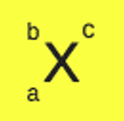

Bagikan artikel ini


Rama Tihara, 20 feb 2022 - 08.55 am
Perhatikan sekeliling kalian, matahari terbit dari timur di pagi hari, bulan muncul pada malam hari, bumi mengelilingi matahari dalam dua belas bulan, dan banyak lagi keteraturan semesta ini. Hebat ya Sang Pencipta kita mengatur alam semesta ini dengan rapi. Bsampai tingkat paling kecil pun, elektron-elektron di alam semesta ini telah diatur dengan rapi menurut bilangan kuantumnya! Wow apa tuh bilangan kuantum?
Elektron-elektron tersebar di sekeliling atom dengan teratur berdasarkan tingkat energinya. Nah, tingkat energi inilah yang digambarkan dengan bilangan kuantum. Artinya, dari bilangan kuantum, lokasi-lokasi penyebaran elektron dapat digambarkan. Sedetail itu loh Sang Pencipta kita mengaturnya. Bayangkan kalau elektron, penyusun segala sesuatu di alam semesta ini, tidak teratur. Alam semesta ini tidak stabil dong. Mana bisa kita hidup di dunia seperti itu. Keren kan?
Salah satu contoh atom di alam semesta ini adalah atom karbon. Atom kabon adalah penyusun dari berbagai benda yang sangat berguna. Mulai dari bensin, plastik, berlian, bahkan tubuh kita pun tersusun dari karbon! Nah, karbon (biasa dilambangkan dengan huruf C) punya 6 elektron. Bagaimana bilangan kuantum dari elektron terakhirnya? Tinggal ikuti deh langkah-langkahnya.
Partikel Dasar Penyusun Atom dan Lambang Atom
Partikel dasar penyusun atom ada tiga yaitu proton (p), neutron (n) dan elektron (e). Jadi, massa atom = (massa p + massa n) + massa e. Massa elektron jauh lebih kecil dari pada massa proton dan massa neutron, maka massa elektron dapat diabaikan. Dengan demikian: massa atom = massa p + massa n.
| Partikel | Lambang | Massa (g) | Muatan | |
|---|---|---|---|---|
| Satuan | Coulomb | |||
| proton | p | 1.673 x 10-24 | +1 | 1.6 x 10-19 |
| neutron | n | 1.673 x 10-24 | 0 | 0 |
| elektron | e | 9.109 x 10-28 | -1 | -1.6 x 10-19 |
Lambang Atom
X Simbol dari unsur.
a nomor atom merupakan jumlah proton. Saat netral (tidak bermuatan) akan sama dengan jumlah elektron.
b nomor massa melambangkan jumlah proton ditambah jumlah neutron atau disebut juga jumlah nukleon.
c Muatan/bilangan oksidasi (biloks) terdiri dari melepas elektron (positif) dan menangkap elektron atau bertambah (negatif).
Bagikan artikel ini